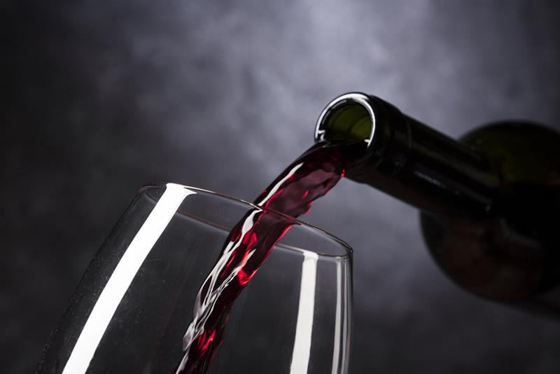

A Vinheria Agnello é um comercio familiar, que iniciou suas atividades em São Paulo há mais de 15 anos, oferecendo ao público uma vasta gama de vinhos nacionais e internacionais. Um de seus diferenciais é o atendimento especializado, no qual nossa equipe orienta clientes sobre uvas, regiões, vinícolas e harmonizações para diferentes ocasiões.
O universo dos vinhos é amplo e complexo: são mais de 6.000 variedades de uvas no mundo, que mudam de sabor conforme clima, solo e técnicas de produção. Essa diversidade torna a escolha difícil para muitos consumidores, reforçando a importância da orientação especializada. Caso deseje saber mais informações sobre vinhos, verifique esse link.
A Vinheria adota cuidados especiais na armazenagem de vinhos, especialmente os de maior valor ou raridade, garantindo que cada garrafa mantenha sua qualidade original até chegar ao cliente.
Embora muitos clientes já tenham experiência no mundo do vinho, a maior parte do público é formada por iniciantes, que contam com a ajuda dos vendedores para escolher rótulos e entender melhor as opções disponíveis.